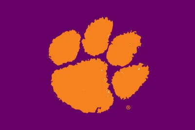

All About Clemson Tigers

1. The Clemson Tigers have won 6 championships
2. The Clemson Tigers Coach is Dabo Swinney
3.The first Clemson Tigher game was in 1896
4.They played against Furman in Greenville South Carolina
5. Dabo Swinneys real name is Willliam Christopher Swinney.